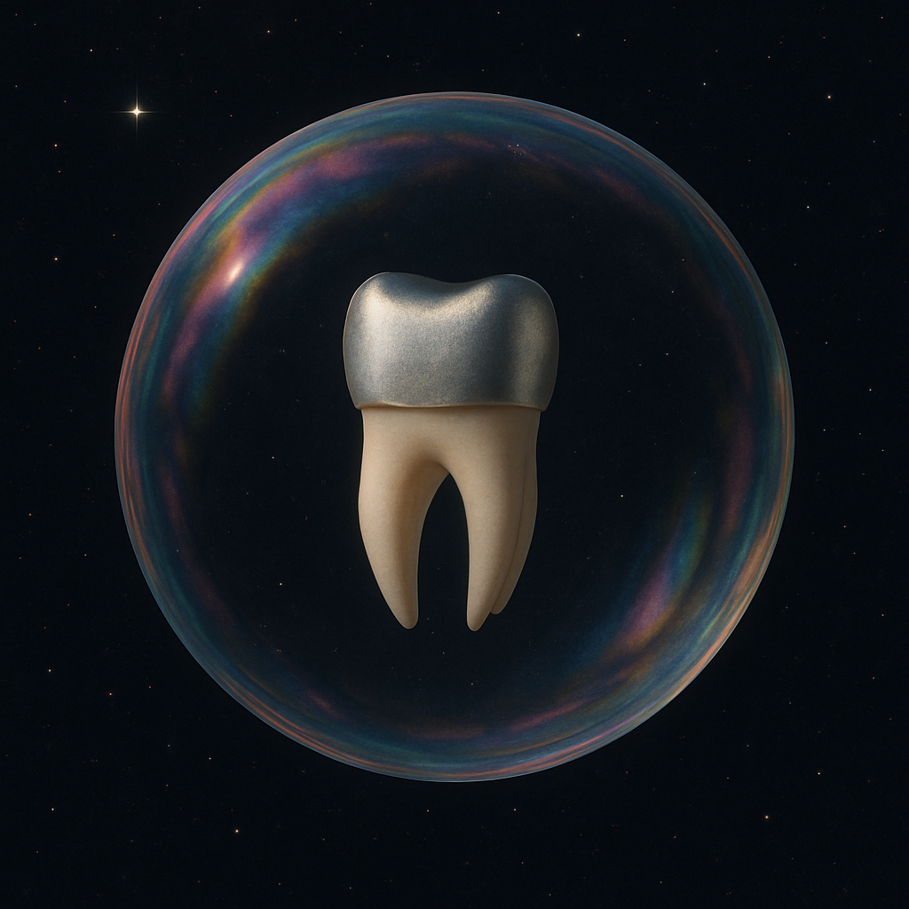

The Lower First Molar (Tooth 6) in Patients Under 18: Which Crown, and When?

Tooth 6 is the first permanent tooth; if it is damaged, it ruins the entire occlusion and jaw growth. So the decision to place a crown must be precise.
When do we move from a simple restoration to a crown?
️ When the destruction is severe
If the walls are thinner than 2 mm, or the pattern of destruction is extensive, such as a wide MOD → an ordinary restoration will not last. (Adhesive treatment should also be considered.)
️ When the child's cooperation is limited
When isolation is difficult or the working time is long, a crown acts like a protective armor.
️ When occlusal forces are high
Bruxism, a tight occlusion, heavy load → without a crown, the tooth's risk of fracture goes up.
️ After endodontic treatment or severe MIH
These teeth have a weak structure, and without full coverage the risk of fracture is high.
Which crown?
Metal crown (SSC)
The best choice at ages 8–12, when you want to work quickly, reliably, and conservatively.
Zirconia / ceramic crown
Better esthetics, more gingiva-friendly, suitable for ages 12–18, when growth has become more stabilized.
The best time for a permanent crown?
Usually from 12 to 18 years of age, when tooth eruption and the gingiva have become more stable.
The short summary:
If the destruction is extensive, the tooth has MIH or has had endodontic treatment, or the occlusal load is high → the best decision for tooth 6 is a crown.
Strategies for Restoration of Compromised First Permanent Molars in Children: Challenges and Optimal Timing
Haojie Yu